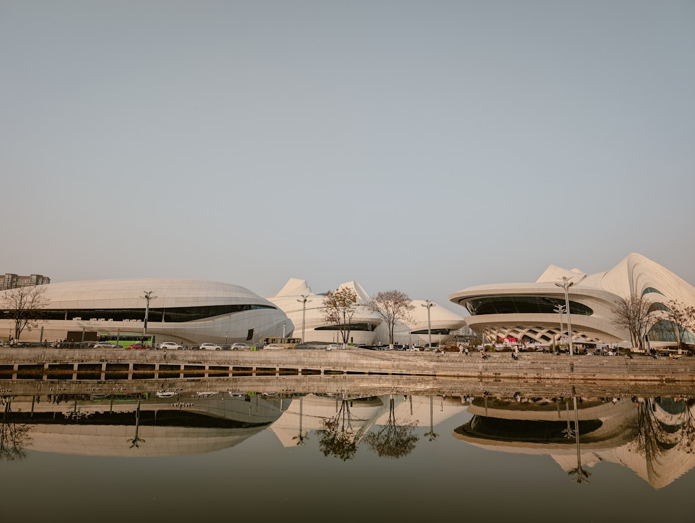
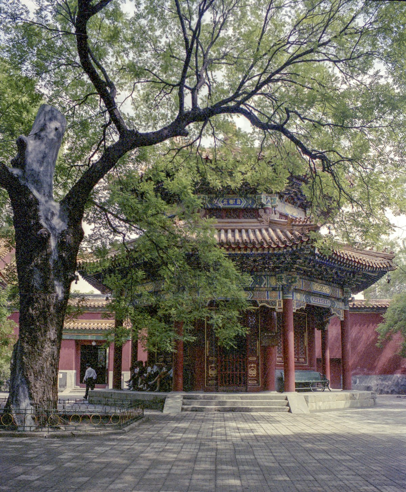
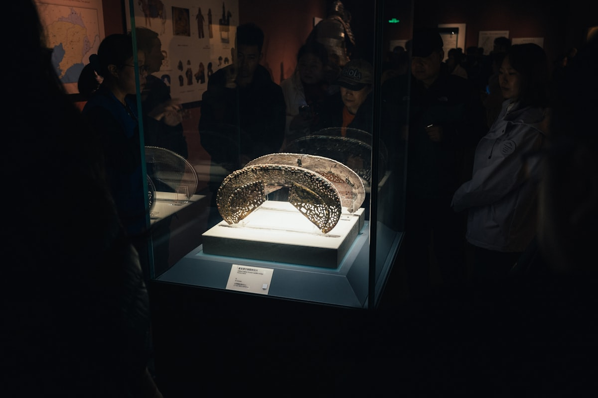

1核心结论
长沙
→
张家界
→
凤凰古城
→
衡山
→
返程
🕐 10 天怎么安排最合理
湖南的精华是「一半烟火、一半奇峰」：长沙是越夜越麻辣的网红城市，张家界的石英砂岩峰林是世界级的山水奇观，凤凰古城是沈从文笔下的边城，南岳衡山则是「寿比南山」的祈福名山。10 天刚好把湘东北到湘西走成一条线：长沙打底，张家界 2–3 天，凤凰 1–2 天，衡山 1 天。省内高铁 2–3 小时可达核心城市，衔接顺畅。
| 事项 | 结论 |
|---|---|
| 事项 | 结论 |
| 推荐方案 | 10 天 9 晚（长沙 2 晚 + 张家界 3 晚 + 凤凰 1 晚 + 衡山 1 晚） |
| 返程约束 | 第 10 天下午/晚间返程 |
| 行程链 | 长沙 → 张家界 → 凤凰古城 → 衡山 → 返程 |
| 预算（人均） | 经济 3800–4800 ／ 标准 5800–7500 ／ 舒适 9500–12000 |
| 三件提前事 | ① 张家界联票/天门山提前 1–3 天订 ② 湖南省博物馆提前 7 天预约 ③ 凤凰住宿提前订（旺季抢手） |
| 季节提醒 | 春秋最佳；夏季张家界凉爽但多雨，冬季衡山有雪、张家界雾凇 |
| 交通卡 | 长沙到张家界高铁 2–3h，凤凰–衡山段高铁 + 大巴 |
⚠️ 两个容易忽略的点
① 张家界景区很大，森林公园（袁家界/天子山）与天门山是两处不同景区，各需一整天，别贪多。② 凤凰古城核心区禁车，拖着行李箱走石板路很累，住宿选靠近停车场的民宿。
2推荐行程 · 10 天版
以下为 10 天 9 晚的推荐节奏。张家界留 3 天不赶路，凤凰与衡山各 1 天，长沙 2 天体验烟火气。
| 日期 | 行程 | 过夜地 | 主题 |
|---|---|---|---|
| D1 抵长沙 | 高铁到长沙，太平街/坡子街夜市 + 湘江夜景 | 长沙 | 抵达 + 预热 |
| D2 | 岳麓山 + 岳麓书院 + 湖南省博物馆 | 长沙 | 湖湘人文 |
| D3 | 长沙 → 张家界，下午武陵源溪布街 / 张家界大峡谷玻璃桥 | 张家界 | 湘西初探 |
| D4 | 张家界国家森林公园（袁家界 + 天子山） | 张家界 | 石英峰林 |
| D5 | 天门山（索道上山 + 玻璃栈道 + 天门洞） | 张家界 | 天门奇观 |
| D6 | 张家界 → 凤凰古城（下午抵达，沱江夜景） | 凤凰古城 | 边城夜色 |
| D7 | 凤凰古城上午漫步 → 高铁/大巴赴衡阳 | 衡阳 | 古城余韵 |
| D8 | 南岳衡山（半山亭/祝融峰，可住山顶） | 衡山 | 寿岳祈福 |
| D9 | 衡山日出/下山 → 高铁回长沙（自由购物） | 长沙 | 登高望远 |
| D10 返程 | 上午自由活动/采购特产，下午返程 | — | 收尾 |
🧭 路线可调原则
张家界与凤凰之间可加古丈红石林/芙蓉镇（在高铁沿途）；衡山看日出需住山顶或凌晨 3 点起床爬山。带老人孩子建议砍掉天门山玻璃栈道，凤凰减少一天改芙蓉镇。夏天长沙很热，白天室内场馆为主。
3逐小时时间线
以下为 10 天全程的逐小时执行时间线，可当作「当天打开照着走」的清单。标注 ※ 的可选项视体力与天气取舍。
D1 · 抵达长沙
星城烟火第一夜
🚄 抵达日
| 时间 | 事项 |
|---|---|
| 14:00–17:00 | 抵达长沙（高铁到长沙南站，飞机到黄花机场），地铁进城入住五一广场/黄兴路步行街周边 |
| 17:30–18:30 | 办理入住，熟悉地铁线路 |
| 19:00–21:00 | 太平街 + 坡子街夜市（免费）：臭豆腐、糖油粑粑、茶颜悦色，火宫殿夜景 |
| 21:00 | 沿湘江边散步看夜景，回酒店休息 |
五一广场是长沙市中心，地铁 1/2 号线交汇，去哪儿都方便；茶颜悦色在湖南以外的城市很难喝到，先排队打卡。
D2 · 岳麓山 + 岳麓书院 + 省博
湖湘人文一日
🏛 人文日
| 时间 | 事项 |
|---|---|
| 08:30–12:00 | 岳麓山（免费）：爱晚亭、岳麓书院（参考 50 元）、橘子洲隔江远眺 |
| 12:00–13:00 | 午餐：麓山南路大学城美食（口味虾/湖南米粉） |
| 14:00–17:00 | 湖南省博物馆（免费需预约）：马王堆汉墓出土，辛追夫人、素纱襌衣、T 型帛画 |
| 18:00 | 晚餐：五一广场/文和友（怀旧风格），湘菜开胃 |
| 19:30 | 回酒店休息 |
省博预约极难，提前 7 天 20:00 在官方小程序抢；辛追夫人棺椁是镇馆之宝，值得留足 2 小时。
D3 · 长沙 → 张家界
湘西初探一日
🌉 张家界日
| 时间 | 事项 |
|---|---|
| 08:00 | 高铁长沙 → 张家界西（约 2.5–3h），抵达后转大巴/打车赴武陵源 |
| 12:00–13:00 | 武陵源午餐（张家界三下锅） |
| 13:30–17:00 | 张家界大峡谷玻璃桥（参考 118 元）或溪布街（免费）：高空玻璃桥 + 峡谷栈道 |
| 18:00 | 入住武陵源/市区，晚餐 |
玻璃桥在武陵源景区外，需提前实名购票、分时段入场；恐高者可改溪布街悠闲半天。
D4 · 张家界国家森林公园
石英砂岩峰林一日
🏔 森林公园日
| 时间 | 事项 |
|---|---|
| 08:00 | 进张家界国家森林公园（联票参考 228 元，四日内有效，含景交） |
| 09:00–12:00 | 袁家界：乾坤柱（阿凡达悬浮山原型）、迷魂台、天下第一桥 |
| 12:00–13:00 | 山顶袁家界驿站简餐 |
| 13:30–16:30 | 天子山：御笔峰、仙女献花，缆车或环保车下山 |
| 17:30 | 出园回武陵源，晚餐+休整 |
门票 4 日有效，D4 只走袁家界+天子山是经典走法；体力好可加金鞭溪（下段平地）。穿防滑鞋，山顶温差大。
D5 · 天门山
天门奇观一日
🏔 天门山日
| 时间 | 事项 |
|---|---|
| 08:00 | 出发天门山（索道参考 278 元，含门票；联票 320 元） |
| 09:00–12:00 | 山顶东线：玻璃栈道、鬼谷栈道、云梦仙顶 |
| 12:00–13:00 | 山顶餐厅简餐 |
| 13:30–16:30 | 天门洞：999 级天梯或穿山扶梯，天门洞开、通天大道 |
| 17:30 | 返程回市区/武陵源 |
天门山分 A/B 线（索道上/环保车下），票种不同路线不同，购票时看清；旺季排队 2h 起，越早越好。
D6 · 张家界 → 凤凰古城
边城夜色一日
🏮 凤凰日
| 时间 | 事项 |
|---|---|
| 08:30 | 张家界 → 凤凰古城（高铁至凤凰古城站 1.5h，出站转接驳车/出租车 20 分钟） |
| 11:30–13:00 | 凤凰午餐（血粑鸭、姜糖） |
| 13:30–17:00 | 沱江泛舟（参考 80 元）+ 古城墙、虹桥风雨楼、沈从文故居（参考 148 元联票） |
| 18:00–21:00 | 沱江边晚餐 + 夜景：万名塔、跳岩、吊脚楼灯光 |
| 21:30 | 入住古城民宿 |
凤凰核心区禁机动车，预订住宿时问清是否含接送或近停车场；夜景最佳拍摄点在虹桥与万名塔之间。
D7 · 凤凰古城 → 衡阳
古城余韵 + 转场
🏯 古城日
| 时间 | 事项 |
|---|---|
| 07:30–10:00 | 清晨凤凰（人少、光线好）：沱江晨雾、吊脚楼拍照 |
| 10:30 | 午餐后赴凤凰古城站，高铁/中转赴衡阳东（约 3–4h） |
| 15:30–17:30 | 抵达衡阳，入住南岳区（衡山脚下） |
| 18:00 | 晚餐：南岳素斋/土菜，早休息为 D8 爬山蓄力 |
凤凰→衡阳高铁无直达，通常经怀化/长沙中转；预留 3–4 小时车程，把 D7 定为转场日。
D8 · 南岳衡山
寿岳祈福一日
⛰ 衡山日
| 时间 | 事项 |
|---|---|
| 08:00 | 进南岳衡山（门票参考 120 元，含景交） |
| 09:00–12:00 | 祝融峰线路：半山亭 → 南天门 → 祝融峰（可乘环保车/索道到南天门再步行） |
| 12:00 | 山顶简餐 |
| 13:30–16:00 | 下山顺访南岳大庙（参考 60 元，南岳香火最旺处） |
| 17:30 | 下山入住南岳区/衡阳市区 |
衡山是「五岳独秀」，祝融峰海拔 1300 米；想看日出的住山顶宾馆（提前订）或凌晨 4 点出发。南岳大庙是「江南第一庙」。
D9 · 衡山 → 长沙
登高望远 + 回长沙
🏙 返长日
| 时间 | 事项 |
|---|---|
| 07:30–08:30 | （可选）清晨再次上山拍日出，或睡到自然醒 |
| 09:30 | 衡山西站高铁 → 长沙南（约 1h） |
| 11:30–13:00 | 长沙午餐（最后一顿湘菜） |
| 13:30–17:00 | 自由活动：黄兴路步行街/IFS 国金中心/文和友补购物 |
| 18:00 | 晚餐 + 早点回酒店整理行李 |
D9 是缓冲日，衡山返长后以休闲购物为主；想去橘子洲的可下午补上（地铁 2 号线直达，观光小火车 20 元）。
D10 · 返程
采购特产 + 回家
🚄 返程日
| 时间 | 事项 |
|---|---|
| 08:30–10:00 | 自由活动：湖南省博物馆（若 D2 未去）或市区采购 |
| 10:00–11:30 | 采购特产：酱板鸭、灯芯糕、安化黑茶、剁椒 |
| 11:30–12:30 | 午餐 |
| 13:00–16:00 | 退房，长沙南站/黄花机场返程 |
伴手礼推荐：酱板鸭、灯芯糕、安化黑茶、剁辣椒、黑色经典臭豆腐真空装。
4景点图鉴
必去（必去）/ 顺路（顺路）/ 可跳过（可跳过）。
必去
张家界国家森林公园 联票参考 228 元（4 日有效）
世界自然遗产。袁家界乾坤柱、天子山御笔峰，石英砂岩峰林。
 必去
必去天门山 索道联票参考 278–320 元
天门洞、玻璃栈道。99 弯通天大道、鬼谷栈道。
必去
凤凰古城 免费（部分景点联票 148 元）
沈从文《边城》原型。沱江泛舟、吊脚楼、虹桥。
 顺路
顺路岳麓山 免费（岳麓书院参考 50 元）
湖湘文脉。爱晚亭、岳麓书院，湘江隔岸看橘子洲。

必去湖南省博物馆 免费（需预约）
马王堆汉墓。辛追夫人、素纱襌衣、T 型帛画。

顺路南岳衡山 参考价 120 元（含景交）
五岳独秀。祝融峰、南岳大庙，寿岳祈福。

顺路橘子洲 免费（小火车 20 元）
湘江江心洲。毛泽东青年雕像，看湘江北去。
可跳过
张家界大峡谷玻璃桥 参考价 118 元
世界最高玻璃桥。高空玻璃栈道 + 峡谷瀑布。
图片为 Unsplash 主题图（张家界峰林、沱江古城、岳麓书院为湖南实景或同主题示意图），用于页面配图。更多免费景点：太平街、坡子街、湘江风光带、溪布街。
5路线地图
点击左侧节点可在地图上定位；点击地图 marker 会高亮对应节点。坐标为 WGS-84 转 GCJ-02 纠偏后标注。
6预算明细（三档）
以下为单人、不含购物的估算；门票为旺季参考价，以现场为准。交通按高铁往返计（从华东/华南周边城市出发约 900–1500 元），不同出发地浮动较大。张家界索道与门票是大头。
| 项目 | 经济（3800–4800） | 标准（5800–7500） | 舒适（9500–12000） |
|---|---|---|---|
| 往返交通 | 高铁约 900–1400 | 高铁/飞机约 1600–2600 | 飞机+接送约 3000–4000 |
| 住宿（9 晚） | 青旅/快捷 900–1400 | 连锁酒店 2000–3000 | 江景/吊脚楼民宿 5000–6500 |
| 门票 | 基础景点约 500 | 含索道/玻璃桥约 900 | 全含 + 演出约 1300 |
| 餐饮（10 天） | 600–800 | 1200–1600（含湘菜） | 2000–2600（老字号+夜宵） |
| 省内交通 | 高铁+大巴 350–450 | 高铁+包车 550–800 | 包车 900–1300 |
💰 标准档示例账单（人均约 7200 元）
高铁往返 2200 + 住宿 9 晚 2600 + 门票 900 + 餐饮 1500 + 省内交通 650 ≈ 7850 元。主要浮动项是张家界索道与凤凰江景房，提前订可省 800–1500 元。
7备选方案
7.1 只看精华的 6 天版
- D1 抵长沙，太平街
- D2 岳麓山+省博
- D3 张家界森林公园
- D4 天门山
- D5 凤凰古城
- D6 返程
7.2 冬季雾凇版（12–2 月）
冬季张家界时有雾凇、雪后峰林极美，天门山玻璃栈道可能临时关闭；衡山雪景出名、但索道可能停运需步行。保暖装备与防滑鞋必备。
7.3 亲子版调整
带娃推荐：张家界森林公园（平缓栈道多）、凤凰古城（沱江游船）、长沙科技馆/动物园；天门山玻璃栈道恐高慎选，衡山改为半山往返。湘菜偏辣，给孩子点免辣菜。
8交通与住宿
8.1 湖南 ⇄ 各地 交通
| 方式 | 时长 | 参考价 | 备注 |
|---|---|---|---|
| 高铁（推荐） | 视出发地 2–6h | 二等座 200–900 元 | 长沙南为枢纽，到张家界 2.5–3h |
| 飞机 | 视出发地 1–3h | 300–1800 元 | 黄花机场地铁进城；张家界/衡阳有机场 |
| 自驾 | 视出发地 | 高速+停车费 | 湘西盘山路多，雨雾天慎行 |
⚠️ 省内交通核心提醒
长沙—张家界高铁 2.5–3h；凤凰古城—衡山无直达高铁，需经怀化/长沙中转约 3–4h。张凤、凤衡段旺季票紧，务必提前 2–3 天购票。
8.2 省内交通
- 高铁：长沙⇄张家界 2.5–3h，长沙⇄衡山西 1h，凤凰⇄长沙 2h
- 城际大巴：张家界→凤凰、凤凰→怀化为中转衔接方式
- 地铁：长沙 1/2/3 号线覆盖省博、岳麓山、橘子洲等
- 接驳车：凤凰古城站→古城、武陵源站→景区均需接驳
- 包车：张家界—凤凰—衡山环线拼车省时，山路注意安全
8.3 住宿区域推荐
| 区域 | 价格/晚 | 优点 | 短板 |
|---|---|---|---|
| 长沙五一广场 | 快捷 250–400 / 星级 600–1200 | 市中心、夜市+地铁 | 旺季贵、偏热闹 |
| 张家界武陵源 | 快捷 250–400 | 近森林公园门票站 | 离市区远 |
| 张家界市区 | 快捷 200–350 | 近天门山索道 | 离武陵源远 |
| 凤凰古城内 | 民宿 300–600 | 吊脚楼江景，夜景近 | 禁车，搬行李累 |
| 南岳区（衡山） | 快捷 200–350 | 山脚近大庙与登山口 | 选择少 |
9美食清单
🍜 必吃经典
- 长沙臭豆腐（黑色经典）
- 湖南米粉（长沙/常德）
- 剁椒鱼头、小炒黄牛肉
- 凤凰血粑鸭、酸汤鱼
🥮 伴手礼
- 酱板鸭、灯芯糕
- 安化黑茶、君山银针
- 剁辣椒、腊肉
- 张家界三下锅料包、姜糖
🍢 夜市小吃
- 太平街/坡子街夜市
- 长沙文和友（怀旧街景）
- 糖油粑粑、刮凉粉
- 茶颜悦色（来湖南必喝）
📍 去哪吃
- 长沙太平街/坡子街（小吃扎堆）
- 五一广场/文和友（湘菜+夜宵）
- 凤凰沱江边（江景+血粑鸭）
- 衡山脚下（土菜+素斋）
⚠️ 美食防坑
① 湘菜普遍偏辣，不能吃辣先跟店家说「免辣/微辣」；② 张家界三下锅分量大，2 人点小份；③ 凤凰江边餐馆看江景溢价高，吃味道去古城巷子；④ 文和友排队 1–2h，错峰去。
10出行贴士
10.1 行前清单
- 身份证、充电宝
- 防滑徒步鞋（张家界+衡山登山多）
- 防晒霜、遮阳帽（夏季）
- 薄外套（山顶温差大）
- 张家界联票/天门山提前 1–3 天
- 湖南省博物馆提前 7 天预约
- 凤凰古城接驳车/住宿确认接送
- 山岳天气多变，备雨具
10.2 防踩坑
🧳 四条提醒
① 张家界森林公园与天门山是两个景区，各需一整天，别安排同一天；② 天门山旺季排队 2h 起，选最早场次；③ 凤凰古城夜间酒吧噪音大，住宿远离沱江主街；④ 衡山看日出必提前订山顶住宿，当日上山无房。
🌟 一句话总结
湖南是「一半烟火、一半奇峰」——长沙的辣椒与夜宵、张家界的三千奇峰、凤凰的沱江吊脚楼、衡山的寿岳祈福，10 天刚好把湘东北的烟火和湘西的山水连成一条线。把张家界留足 3 天、把省博预约抢到手，剩下的就是慢慢辣、慢慢逛。